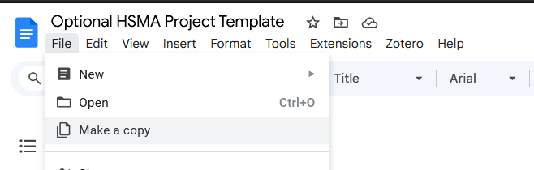

Project Criteria
HSMA projects must meet a few criteria
- They must use a method we teach on the HSMA course
- the method can be related to a method we teach - for example, if you wished to use a time series forecasting method we haven’t taught, this would be ok, but we may be able to provide less detailed support than for a technique we have taught
- It must use free and open source methods
- It must be in the area of health, social care, or policing
- It must be registered by a member of a current HSMA cohort or a HSMA alumni
Registering Your Project
Once you have an idea of what you want your project to be, please post in the #new_project_airlock Slack channel with a brief description of any project you’d like to register as a HSMA project.
The team will then create you a channel on Slack to use for project discussions, and register your project on the current HSMA project register.
You don’t need to do anything more formal than that - you can start cracking on with your project work and use your project channel to reach out to the HSMA community for help.
While we provide a project design template, this is entirely optional and is only designed to guide your thinking. If you have filled it out, it is helpful for us if you submit it along with your brief project description in the #new_project_airlock - but you do not have to fill in every field, or even fill it in at all if you don’t find it helpful!!
Examples
Here’s are some example registration messages. More detailed messages are welcomed and help us to get the best idea of your project, but a couple of sentences outlining the rough question and method is fine too, and is sufficient in many cases!
Example 1
Can I register a project using DES to model patient navigation of GP vs 111 and the knock-on effect on ED please?
Example 2
My project:
Name: Use DES to optimise theatre capacity for elective procedures and major trauma arrivals in Orthopaedics
Background: Orthopaedic Trauma – Emergency Referrals (Major Trauma) increasing over the last 4-5 months; UHCW is a Major Trauma Centre so receive patients from further afield as well as local patients. Also, a Tertiary referral centre for specialised surgeries. This is impacting on elective lists as not enough capacity to do alongside emergency cases. Having a financial impact on the Trust due to money Orthopaedics brings in but activity is unable to happen due to emergency cases, waiting lists increasing. Harder to get patients back from elsewhere due to lack of resource/capacity.
Aim: To create a DES model showing the major trauma and elective surgery pathways in Orthopaedics and experiment with adding extra theatre slots and/or increasing capacity elsewhere in the pathway to improve flow and the waiting list.
Proposed outputs: Initial analysis of demand, patient type, IP/OP LOS/capacity Interactive DES Model to adjust various capacity metrics (e.g. number of sessions, slots, resource capacity). I may also do a bit of geographical modelling to see where the trauma and tertiary patients are coming from. Forecasting to spot trends in time of day, seasonality, day of week in major trauma arrivals
Optional Project Design Template
For those of you who would find a template useful to start thinking through some key aspects of their projects, one is provided on this page.
It is indended to serve as a good prompt to start thinking about some of the things that might come up.
The template is entirely optional - please feel free to use it, not use it, only fill in the fields you find useful for you, add fields, etc.
If you do fill it out, it is helpful for us if you submit it along with your brief project description in the #new_project_airlock - but you do not have to fill in every field, or even fill it in at all if you don’t find it helpful!!
Click Here to Open the Template in Google Documents
You will need to take a copy of the document to be able to edit it.

Some examples of filled in templates for real HSMA projects can be found here if you are a member of the HSMA Slack community.
Tips for Generating Project Ideas
If you are struggling to get started with project ideas, here are a couple of prompts to help.
Take a look at the previous HSMA projects.
Think about the areas of the course you most enjoyed. While the needs of the organisation need to come first, it’s also helpful to consider the areas of the course you
- found the most interesting
- felt you broadly understood (don’t feel you have to be an expert yet - you will practice and develop your skills significantly over the next 9 months!)
- would like to work with more in the long run in your career/begin to specialise in
This interest will help sustain you through the more difficult moments of the project!
Think about any areas you know to be struggling in your organisation at the moment. Are there services you know have particularly long waits? Are there areas people often mention as being a concern? Are there articles in the wider news about waits in a particular service in your organisation?
Think about the questions you have found yourself being asked in the past in your role that you didn’t feel you were able to answer. Have people asked you questions about the ideal staffing levels, the future demand, or where the delays in a pathway are?
Think about the stakeholders you have good relationships with. Could you reach out to them to have a chat about areas they may be interested in someone doing a deeper dive into?
Talk to your manager - they may have more awareness of the key challenges facing the organisation at present.
Tips for Scoping a Good Project
- You ideally want projects that are not too time-critical to the organisation; remember that you may be working on this for 9 months (or more!).
- With that being said, shorter projects - or projects that you work on more intensely than 1 day a week so that they are completed in a shorter space of time - are fine too!
- Start small and focussed; you can always expand the scope of the project down the line, but consider limiting your initial project to a single service or even sub-service.
- Don’t worry that your project is ‘too simple’! Nothing is ever quite as simple as it seems, and ‘simple’ modelling can still be highly impactful.
- Consider the possible ethical issues with your project early on.
- This can be particularly tricky with machine learning projects. Refer back to the AI module - does it run into murky territory?
- Often predictions that are aggregated in some way are a safer option than those that are used to directly influence a patient’s care. For example, predicting the number of patients who are likely to be admitted to each specialty in the next 6 hours can help with optimizing bed management - but using that prediction for an individual patient to alter their pathway or care is likely to not be ok.
- Consider the data requirements for your proposed project. Do you need data that you know is already collected in some capacity, or would you need to collect brand new data?
- Is it a dataset you already have access to? If not, consider how you may be able to progress elements of the project while waiting for access to be granted. This part can often take longer than you expect.
- Consider the impact
- What information can you give people at the end of your project, and what will they be able to do with it?
Still Got Questions?
Take a look at the FAQs to see if your question is covered there.